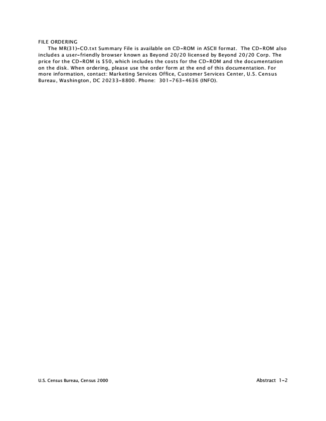

Modified Race Data Summary File 2000 Census of Population and Housing Technical Documentation Issued September 2002
CONTENTS
CHAPTERS
1 Abstract . . . . . . . . . . . . . . . . . . . . . . . . . . . . . . . . . . . . . . . . . . . . 1-1
2 Overview: Why a Modified Race File . . . . . . . . . . . . . . . . . . . . . . . 2-1
3 Procedure: Race Modification . . . . . . . . . . . . . . . . . . . . . . . . . . . . 3-1
4 ASCII File Layout . . . . . . . . . . . . . . . . . . . . . . . . . . . . . . . . . . . . . . 4-1
5 User Updates . . . . . . . . . . . . . . . . . . . . . . . . . . . . . . . . . . . . . . . . . 5-1
U.S. Census Bureau, Census 2000 i
Chapter 1. Abstract
Page Citation . . . . . . . . . . . . . . . . . . . . . . . . . . . . . . . . . . . . . . . . . . . . . . . . . . . . . . . . . . . . . . . . . 1-1 Type of File . . . . . . . . . . . . . . . . . . . . . . . . . . . . . . . . . . . . . . . . . . . . . . . . . . . . . . . . . . . . . . 1-1 Subject Content . . . . . . . . . . . . . . . . . . . . . . . . . . . . . . . . . . . . . . . . . . . . . . . . . . . . . . . . . . . 1-1 Geographic Content . . . . . . . . . . . . . . . . . . . . . . . . . . . . . . . . . . . . . . . . . . . . . . . . . . . . . . . . 1-1 ASCII File Technical Description . . . . . . . . . . . . . . . . . . . . . . . . . . . . . . . . . . . . . . . . . . . . . . . 1-1 File Ordering . . . . . . . . . . . . . . . . . . . . . . . . . . . . . . . . . . . . . . . . . . . . . . . . . . . . . . . . . . . . . 1-2 Figure 1. List of 31 Race Categories . . . . . . . . . . . . . . . . . . . . . . . . . . . . . . . . . . . . . . . . . . . . 1-3
CITATION
Census 2000 Modified Race Data [MR(31)-CO.txt], prepared by the U.S. Census Bureau, 2002.
TYPE OF FILE
Summary statistics.
SUBJECT CONTENT
The MR(31)-CO.txt Summary File provides data from Census 2000 for all persons in the United States and Puerto Rico, where the race data have been modified to meet the needs of selected data users. This modification reconciles the Census 2000 race categories with those race categories that appear in the data from administrative records, which are used to produce population estimates and projections.
Census 2000: MR(31)-CO.txt: Age (19), Sex (2), Race (31), Hispanic origin (2) by County (3,141)
Age: 0, 1-4, 5-9 ... 80-84, 85+ (five-year age groupings except for 0, 1-4 and 85+) Sex: Male, Female Race: See Figure 1 at the end of this chapter Hispanic origin: Hispanic or Latino, not Hispanic or Latino
Questions about the subject content in this file should be directed to: Population Division, U. S. Census Bureau, Washington DC 20233-8800. Phone: 301-763-2422.
GEOGRAPHIC CONTENT
Data are provided for counties and municipios (county equivalent in Puerto Rico) with state totals. The Federal Information Processing Standards (FIPS) code is used to identify each state, county, and municipio. State records can be identified by blanks in the county or municipio code field.
ASCII FILE TECHNICAL DESCRIPTION
Record length 1,046 characters Data Set Name MR(31)-CO.txt Record count 60,629
U.S. Census Bureau, Census 2000 Abstract 1-1

FILE ORDERING
The MR(31)-CO.txt Summary File is available on CD-ROM in ASCII format. The CD-ROM also includes a user-friendly browser known as Beyond 20/20 licensed by Beyond 20/20 Corp. The price for the CD-ROM is $50, which includes the costs for the CD-ROM and the documentation on the disk. When ordering, please use the order form at the end of this documentation. For more information, contact: Marketing Services Office, Customer Services Center, U.S. Census Bureau, Washington, DC 20233-8800. Phone: 301-763-4636 (INFO).
U.S. Census Bureau, Census 2000 Abstract 1-2
1 Figure 1. List of 31 Race Categories 1. White alone 2. Black or African American alone 3. American Indian and Alaska Native alone 4. Asian alone 5. Native Hawaiian and Other Pacific Islander alone 6. White and Black or African American 7. White and American Indian and Alaska Native 8. White and Asian 9. White and Native Hawaiian and Other Pacific Islander 10. Black or African American and American Indian and Alaska Native 11. Black or African American and Asian 12. Black or African American and Native Hawaiian and Other Pacific Islander 13. American Indian and Alaska Native and Asian 14. American Indian and Alaska Native and Native Hawaiian and Other Pacific Islander 15. Asian and Native Hawaiian and Other Pacific Islander 16. White and Black or African American and American Indian and Alaska Native 17. White and Black or African American and Asian 18. White and Black or African American and Native Hawaiian and Other Pacific Islander 19. White and American Indian and Alaska Native and Asian 20. White and American Indian and Alaska Native and Native Hawaiian and Other Pacific
Islander 21. White and Asian and Native Hawaiian and Other Pacific Islander 22. Black or African American and American Indian and Alaska Native and Asian 23. Black or African American and American Indian and Alaska Native and Native Hawaiian and
Other Pacific Islander 24. Black or African American and Asian and Native Hawaiian and Other Pacific Islander 25. American Indian and Alaska Native and Asian and Native Hawaiian and Other Pacific
Islander 26. White and Black or African American and American Indian and Alaska Native and Asian 27. White and Black or African American and American Indian and Alaska Native and Native
Hawaiian and Other Pacific Islander 28. White and Black or African American and Asian and Native Hawaiian and Other Pacific
Islander 29. White and American Indian and Alaska Native and Asian and Native Hawaiian and Other
Pacific Islander 30. Black or African American and American Indian and Alaska Native and Asian and Native
Hawaiian and Other Pacific Islander 31. White and Black or African American and American Indian and Alaska Native and Asian
and Native Hawaiian and Other Pacific Islander
1
The Two or more races categories are denoted with the conjunction and in bold and italicized print to indicate the separate race groups that comprise the particular combination. U.S. Census Bureau, Census 2000 Abstract 1-3
Chapter 2. Overview: Why a Modified Race File
Page Population Estimates and Projections . . . . . . . . . . . . . . . . . . . . . . . . . . . . . . . . . . . . . . . . . . 2-1 Census 2000 Race Categories . . . . . . . . . . . . . . . . . . . . . . . . . . . . . . . . . . . . . . . . . . . . . . . . 2-1 Race Modifications . . . . . . . . . . . . . . . . . . . . . . . . . . . . . . . . . . . . . . . . . . . . . . . . . . . . . . . . 2-1
POPULATION ESTIMATES AND PROJECTIONS
This Modified Race Summary File contains modified race categories based on Census 2000 data tabulated by age, sex, and Hispanic origin for counties in the United States and Puerto Rico. The Census Bureau’s Population Estimates Program modified the Census 2000 race data for use in the production of post-2000 population estimates and projections. The modification reconciles the Census 2000 race categories with those race categories that appear, or will appear, in the data from administrative records, which are used to produce population estimates and projections. The modification in this summary file did not correct or adjust the Census 2000 procedures for tabulating or coding race data, nor was it corrected for undercoverage or duplication of persons in Census 2000.
CENSUS 2000 RACE CATEGORIES
Many state and local agencies comply with the U.S. Office of Management and Budget (OMB) 1997 revised standards for the collection, tabulation, and presentation of federal data on race and ethnicity.
2
The revised OMB standards identify a minimum of five racial categories: White; Black or African American; American Indian and Alaska Native; Asian; and Native Hawaiian and Other Pacific Islander. Perhaps, the most significant change for Census 2000 was that respondents were given the option to mark one or more races on the questionnaire to indicate their racial identity. Census 2000 race data are shown for people who reported a race either alone or in combination with one or more other races.
To allow Census 2000 respondents who could not identify with any of the above five OMB race categories another option, the questionnaires, with OMB's approval, included a sixth race category: “Some other race.” Space was provided on the questionnaire to allow respondents to also write in their race if their response was “Some other race.” Because of needs to have census data comparable with the reporting categories used by state and local agencies and for compiling other administrative data used in producing population estimates and projections, the Census Bureau developed a procedure to assign an OMB race to those who reported "Some other race." (For more information about race classifications in Census 2000, visit the Census Bureau’s Internet site: www.census.gov/population/www/socdemo/race/racefactcb.html.)
RACE MODIFICATIONS
This summary file provides data from Census 2000 that have been modified to assign each of the persons in the “Some other race” category to an OMB race category. The modified race data include 31 race groups which are the single and multiple race combinations of the OMB race categories: White; Black or African American; American Indian and Alaska Native; Asian; and Native Hawaiian and Other Pacific Islander. (For a list of the 31 race groups shown in this summary file, see Figure 1 in Chapter 1.)
2
Office of Management and Budget, “Revisions to the Standards for the Classification of Federal Data on Race and Ethnicity,” Notice, Vol. 62, No. 210, Thursday, October 30, 1997. U.S. Census Bureau, Census 2000 Overview 2-1
In Census 2000, there were roughly 18.5 million people who identified "Some other race" as part of, or their only, race response. These people were primarily of Hispanic origin, 90.4 percent or 16.8 million people, and many wrote in their Hispanic origin or Hispanic origin type (such as Mexican or Puerto Rican) as their race. Since these people were not included in one of the five OMB race categories, it was necessary to modify their race. Responses of “Some other race alone” were modified by blanking the “Some other race” response and imputing an OMB race category, either alone or in combination with another race. Race responses were imputed from a “donor,” who matched on Hispanic origin. Responses of both “Some other race” and an OMB race(s) were modified by blanking the "Some other race" response and using the OMB race response(s) that was provided. No modification was made for responses indicating only an OMB race alone or in combination with another race. (A more detailed explanation on the procedures used for race modifications is found in Chapter 3.)
U.S. Census Bureau, Census 2000 Overview 2-2
Chapter 3. Procedure: Race Modification
Page Introduction . . . . . . . . . . . . . . . . . . . . . . . . . . . . . . . . . . . . . . . . . . . . . . . . . . . . . . . . . . . . . 3-1 Definitions . . . . . . . . . . . . . . . . . . . . . . . . . . . . . . . . . . . . . . . . . . . . . . . . . . . . . . . . . . . . . . . 3-1 Categorization of Census 2000 Race Responses . . . . . . . . . . . . . . . . . . . . . . . . . . . . . . . . . . 3-1 Modification Procedures . . . . . . . . . . . . . . . . . . . . . . . . . . . . . . . . . . . . . . . . . . . . . . . . . . . . 3-1 Race Allocation
3
Guidelines . . . . . . . . . . . . . . . . . . . . . . . . . . . . . . . . . . . . . . . . . . . . . . . . . . 3-1 Results . . . . . . . . . . . . . . . . . . . . . . . . . . . . . . . . . . . . . . . . . . . . . . . . . . . . . . . . . . . . . . . . . 3-2 Table 1. Summary of Modified Race and Census 2000 Race Distributions . . . . . . . . . . . . . . 3-3 Table 2. Modified Race and Census 2000 Race Distributions . . . . . . . . . . . . . . . . . . . . . . . 3-4
INTRODUCTION
The following describes the modifications used to reconcile the Census 2000 race categories with those race categories that appear in the data from administrative records, which are used to produce population estimates and projections.
DEFINITIONS
A. A specified race response is a response of one or more of the five Office of
Management and Budget (OMB) race categories: White; Black or African American; American Indian and Alaska Native; Asian; Native Hawaiian and Other Pacific Islander. B. A non-specified race response is a response of “Some other race.”
CATEGORIZATION OF CENSUS 2000 RACE RESPONSES
A. Single or multiple race responses that include only specified OMB races. B. Single race responses of a non-specified race (Some other race alone). C. Two or more race responses that include both the specified OMB race(s) and the
non-specified response, “Some other race.”
MODIFICATION PROCEDURES
A. No modification was made for race responses where only a specified OMB race was
provided alone or in combination with one or more OMB races (e.g., White alone, White and Black or African American; White and Black or African American and American Indian and Alaska Native). B. Non-specified race responses of “Some other race” alone were modified by blanking
the non-specified race response and allocating a specified OMB race alone or in combination. Race was allocated from a donor within the household that matched on Hispanic origin. If a donor could not be found within the household, a race was allocated from a hot deck matrix where the donor and donee matched on the specific Hispanic origin (Not Hispanic or Latino; Mexican; Puerto Rican; Cuban; Central American and Dominican; South American; other Spanish). C. Race responses of both specified and non-specified races were modified by blanking
the non-specified race and using the specified OMB race(s). For example, White and Some other race became White alone; White and Black or African American and Some other race became White and Black or African American.
RACE ALLOCATION GUIDELINES
A. Within household race allocation:
1) Donors and donees must match on the specific Hispanic origin (Not Hispanic or
3
The terms “allocation” and “imputation” are used interchangeably in this report. U.S. Census Bureau, Census 2000 Procedure 3-1
Latino; Mexican; Puerto Rican; Cuban; Central American and Dominican; South American; other Spanish). 2) Donors were permitted to have a race and Hispanic origin that was allocated or
edited as part of the Census 2000 edit procedures. 3) Donors were permitted to have a race that was modified. 4) The within-household allocation was consistent with the household relationship
guidelines used in Census 2000 procedures. B. Race allocation from the hot deck matrix:
1) Donors and donees must match on specific Hispanic origin (Not Hispanic or Latino;
Mexican; Puerto Rican; Cuban; Central American and Dominican; South American; other Spanish). 2) Donors could not have a race or Hispanic origin that had been allocated or edited
as part of the Census 2000 procedures. 3) Donors could not have a race that had been modified. 4) Donors were permitted to have an edited age but had to be in the same broad age
range (0-14, 15-34, 35-54, 55+). 5) Hot deck guidelines were consistent with the Census 2000 procedures.
RESULTS
Compared to Census 2000 data, the effect of the race modification shows an increase in the U.S. population that reported only “One race” and a decrease in the population that reported “Two or more races” (see Tables 1 and 2 at the end of this chapter).
� For the total population, the single race population grew from 97.57 percent to 98.62
percent, a difference of 1.05 percentage points in the percent distribution (Table 1).
� For the total population, the Two races population decreased from 2.26 percent to 1.27
percent, a decrease of 0.99 percentage points. This decrease occurred primarily because nearly half of the two races population reported Some other race and exactly one of the five OMB races (Table 1).
� For the total population, the Three or more races population decreased from 0.16
percent to 0.11 percent, a decline of 0.05 percentage points (Table 1).
� As expected, the increase in the specific single race groups due to the modification is
proportional to the size of the group in Census 2000.
� The total White population, the largest racial group in both percent and number,
experienced the largest increase due to the modification, increasing from 75.14 percent to 81.05 percent, an increase of 5.91 percentage points in the percent distribution (Table 1).
� The total Native Hawaiian and Other Pacific Islander population, the smallest racial group
in both percent and number, experienced the smallest increase due to the modification, increasing from 0.14 percent to 0.16 percent, an increase of 0.02 percentage points in the percent distribution (Table 1).
� Both the Hispanic and Not Hispanic population followed a similar pattern with increases
in the population reporting only One race and decreases in the population reporting Two or more races. The percentage point change was greater for the Hispanic population.
� Changes after the modification are consistent for both the Hispanic and Not Hispanic
populations.
U.S. Census Bureau, Census 2000 Procedure 3-2
Table 1. Summary of M
odified Race and C ensus 2000 Race Distributions for the United States
Subject Modified Race Census 2000
Number Percent Number Percent TOTAL POPULATION 281,421,906 100.00 281,421,906 100.00 One race 277,524,226 98.62 274,595,678 97.57 Specified race only 277,524,226 98.62 259,236,605 92.12 White 228,104,485 81.05 211,460,626 75.14 Black or African American 35,704,124 12.69 34,658,190 12.32 American Indian and Alaska Native 2,663,818 0.95 2,475,956 0.88 Asian 10,589,265 3.76 10,242,998 3.64 Native Hawaiian and Other Pacific Islander 462,534 0.16 398,835 0.14
Non-specified race only (X) (X) 15,359,073 5.46
Two races 3,578,053 1.27 6,368,075 2.26 Specified race only 3,578,053 1.27 3,366,517 1.20 Specified and non-specified races (X) (X) 3,001,558 1.07
Three or more races 319,627 0.11 458,153 0.16 Specified race only 319,627 0.11 297,298 0.11 Specified and non-specified races (X) (X) 160,855 0.06
HISPANIC OR LATINO AND RACE 35,305,818 100.00 35,305,818 100.00 One race 34,814,386 98.61 33,081,736 93.70 Specified race only 34,814,386 98.61 18,190,433 51.52 White 32,529,000 92.13 16,907,852 47.89 Black or African American 1,391,117 3.94 710,353 2.01 American Indian and Alaska Native 566,378 1.60 407,073 1.15 Asian 232,461 0.66 119,829 0.34 Native Hawaiian and Other Pacific Islander 95,430 0.27 45,326 0.13
Non-specified race only (X) (X) 14,891,303 42.18
Two races 433,726 1.23 2,110,965 5.98 Specified race only 433,726 1.23 315,611 0.89 Specified and non-specified races 1,795,354 5.09
Three or more races 57,706 0.16 113,117 0.32 Specified race only 57,706 0.16 48,933 0.14 Specified and non-specified races (X) (X) 64,184 0.18
NOT HISPANIC OR LATINO AND RACE 246,116,088 100.00 246,116,088 100.00 One race 242,709,840 98.62 241,513,942 98.13 Specified race only 242,709,840 98.62 241,046,172 97.94 White 195,575,485 79.46 194,552,774 79.05 Black or African American 34,313,007 13.94 33,947,837 13.79 American Indian and Alaska Native 2,097,440 0.85 2,068,883 0.84 Asian 10,356,804 4.21 10,123,169 4.11 Native Hawaiian and Other Pacific Islander 367,104 0.15 353,509 0.14
Non-specified race only (X) (X) 467,770 0.19
Two races 3,144,327 1.28 4,257,110 1.73 Specified race only 3,144,327 1.28 3,050,906 1.24 Specified and non-specified races (X) (X) 1,206,204 0.49
Three or more races 261,921 0.11 345,036 0.14 Specified race only 261,921 0.11 248,365 0.10 Specified and non-specified races (X) (X) 96,671 0.04
(X) Not applicable.
U.S. Census Bureau, Census 2000 Procedure 3-3
Table 2. Modifi
ed Race and Census 2000 Race Distributions for the United States
Subject Modified Race Census 2000
Number Percent Number Percent TOTAL POPULATION 281,421,906 100.00 281,421,906 100.00 One race 277,524,226 98.62 274,595,678 97.57 Specified race only 277,524,226 98.62 259,236,605 92.12 White 228,104,485 81.05 211,460,626 75.14 Black or African American 35,704,124 12.69 34,658,190 12.32 American Indian and Alaska Native 2,663,818 0.95 2,475,956 0.88 Asian 10,589,265 3.76 10,242,998 3.64 Native Hawaiian and Other Pacific Islander 462,534 0.16 398,835 0.14 Non-specified race (X) (X) 15,359,073 5.46 Some other race (X) (X) 15,359,073 5.46 Two or more races 3,897,680 1.38 6,826,228 2.43
Two races 3,578,053 1.27 6,368,075 2.26 Specified race only 3,578,053 1.27 3,366,517 1.20 White; Black or African American 878,563 0.31 784,764 0.28 White; American Indian and Alaska Native 1,118,466 0.40 1,082,683 0.38 White; Asian 908,787 0.32 868,395 0.31 White; Native Hawaiian and Other Pacific Islander 122,476 0.04 112,964 0.04 Black or African American; American Indian and Alaska Native 191,261 0.07 182,494 0.06 Black or African American; Asian 116,507 0.04 106,782 0.04 Black or African American; Native Hawaiian and Other Pacific Islander 32,581 0.01 29,876 0.01 American Indian and Alaska Native; Asian 56,542 0.02 52,429 0.02 American Indian and Alaska Native; Native Hawaiian and Other Pacific Islander 8,143 - 7,328 - Asian; Native Hawaiian and Other Pacific Islander 144,727 0.05 138,802 0.05 Specified and non-specified races (X) (X) 3,001,558 1.07 White; Some other race (X) (X) 2,206,251 0.78 Black or African American; Some other race (X) (X) 417,249 0.15 American Indian and Alaska Native; Some other race (X) (X) 93,842 0.03 Asian; Some other race (X) (X) 249,108 0.09 Native Hawaiian and Other Pacific Islander; Some other race (X) (X) 35,108 0.01
Three races 288,963 0.10 410,285 0.15 Specified race only 288,963 0.10 269,699 0.10 White; Black or African American; American Indian and Alaska Native 117,904 0.04 112,207 0.04 White; Black or African American; Asian 22,715 0.01 21,166 0.01 White; Black or African American; Native Hawaiian and Other Pacific Islander 3,282 - 2,938 - White; American Indian and Alaska Native; Asian 24,987 0.01 23,766 0.01 White; American Indian and Alaska Native; Native Hawaiian and Other Pacific Islander 5,189 - 4,843 - White; Asian; Native Hawaiian and Other Pacific Islander 97,839 0.03 89,611 0.03 Black or African American; American Indian and Alaska Native; Asian 6,197 - 5,798 - Black or African American; American Indian and Alaska Native; Native Hawaiian and Other
1,117 - 998 - Pacific Islander Black or African American; Asian; Native Hawaiian and Other Pacific Islander 6,433 - 5,309 - American Indian and Alaska Native; Asian; Native Hawaiian and Other Pacific Islander 3,300 - 3,063 - Specified and non-specified races (X) (X) 140,586 0.05 White; Black or African American; Some other race (X) (X) 43,172 0.02 White; American Indian and Alaska Native; Some other race (X) (X) 29,095 0.01 White; Asian; Some other race (X) (X) 34,962 0.01 White; Native Hawaiian and Other Pacific Islander; Some other race (X) (X) 8,364 - Black or African American; American Indian and Alaska Native; Some other race (X) (X) 7,023 - Black or African American; Asian; Some other race (X) (X) 8,069 - Black or African American; Native Hawaiian and Other Pacific Islander; Some other race (X) (X) 2,167 - American Indian and Alaska Native; Asian; Some other race (X) (X) 2,544 - American Indian and Alaska Native; Native Hawaiian and Other Pacific Islander; Some other race (X) (X) 586 - Asian; Native Hawaiian and Other Pacific Islander; Some other race (X) (X) 4,604 -
Four races 23,168 0.02 38,408 0.01 Specified race only 23,168 0.01 20,988 0.01
U.S. Census Bureau, Census 2000 Procedure 3-4